The Himalaya
Pahari Cuisine
Hill cooking built for winter: dried pulses, soured yogurt gravies, coarse mountain grains, and feasts served on leaf plates by hereditary cooks.
Hill cooking built for winter: dried pulses, soured yogurt gravies, coarse mountain grains, and feasts served on leaf plates by hereditary cooks.
Pahari cooking (the food of the Himalayan hills) is shaped less by what grows than by what survives. Above about six thousand feet the growing season is short, the passes close, and for months the only vegetables available are the ones dried in autumn and strung from a beam. So the hill kitchen learned to build meals out of stores: black gram and kidney beans, horse gram and black soybean, dried apricots, sun-dried greens, fermented bamboo in the eastern hills, and grains that ripen fast at altitude. Fresh produce is a summer luxury.
Two consequences follow. The first is that pulses do the heavy lifting: a Pahari meal is usually built around a dal, and the dals are dense, dark and slow. The second is that sourness has to be manufactured in the kitchen. Yogurt, buttermilk, dried mango powder, tamarind and locally the sharp wild fruits of the hills all stand in for the citrus and tomatoes a plains kitchen takes for granted. That single constraint (sourness out of a jar) explains a surprising amount of what follows.
Himachal's great communal meal is the dham, served at weddings, temple festivals and village gatherings. Guests sit in long rows on the floor and eat from pattals, plates stitched from leaves, while the food comes down the line in buckets. The household does not cook it. That falls to the botis. Hereditary cooks, in Himachal usually Brahmins, who inherit the job and the recipes from their fathers and who begin work the night before over wood fires and enormous brass vessels. A single boti and his team may feed a thousand people from one courtyard.
The dham has a fixed grammar. Rice first, then a dal, then the madras: gravies thickened with whisked yogurt, gently soured and barely spiced with anything hot, in which chickpeas or kidney beans are simmered until they take on the tang. Sepu vadi, fried lentil cakes sunk into a dark dal, appears in the Kangra version. The meal ends in khatta and then mitha. Something sour, then something sweet, usually a sweet rice. Nothing is fried at the table and nothing is served hot off a tandoor; the whole structure is designed to be cooked in bulk hours ahead and still taste right.
Himachal Pradesh and Uttarakhand are separate states with separate histories (Uttarakhand was carved out of Uttar Pradesh only in 2000) but their hill cooking rhymes so closely that it makes little sense to treat them apart, which is why they share a page here. Uttarakhand's two halves, Kumaon in the east and Garhwal in the west, cook on the same logic of stored pulses and coarse grains, with their own vocabulary. Gahat, horse gram, is the regional obsession: hard, warming, credited with dissolving kidney stones, and cooked into thick dals and into ras, a soupy pulse broth poured over rice. Bhatt, the black soybean, becomes churkani, thickened with a spoonful of toasted flour.
The grains are different too. Jhangora, barnyard millet, and mandua, finger millet, ripen where rice and wheat will not, and both remain everyday food, eaten in the hills as they always have been: mandua goes into dark rotis, jhangora into a milky kheer. Garhwal's own signatures are chainsoo, black gram roasted before grinding until the dal turns almost black and smells of woodsmoke, and phaanu, several soaked pulses ground together and cooked to a loose, soupy dal. These are dishes engineered for calories and warmth at altitude, and they taste like it.
The fat is mustard oil, pressed sharp and heated to smoking before anything goes into it, though ghee appears at feasts and in the Kangra valley's richer cooking. Spicing is restrained by plains standards: hing, cumin, coriander, turmeric, a little garam masala, and in Uttarakhand jakhiya, a wild mustard-family seed that pops like a cross between mustard and nigella and is used almost exclusively in these hills. Chillies are present but rarely dominant; heat is not what Pahari food is for.
The most conspicuous absence is onion and garlic. In much Pahari Brahmin cooking, and in the dham and temple food especially, both are simply not used. A dietary rule shared with several other Indian Brahmin traditions, which treats them as agitating foods unsuited to ritual purity. Hing does the work instead, providing the savoury base note that alliums would otherwise supply. It explains the flavour: a madra or a chainsoo tastes the way it does partly because of what has been left out, and the technique of building depth from yogurt, toasted spice and long cooking developed to fill that gap.
 Aloo ke Gutke
Aloo ke Gutke
 Arsa
Arsa
 Auriya Kaddu
Auriya Kaddu
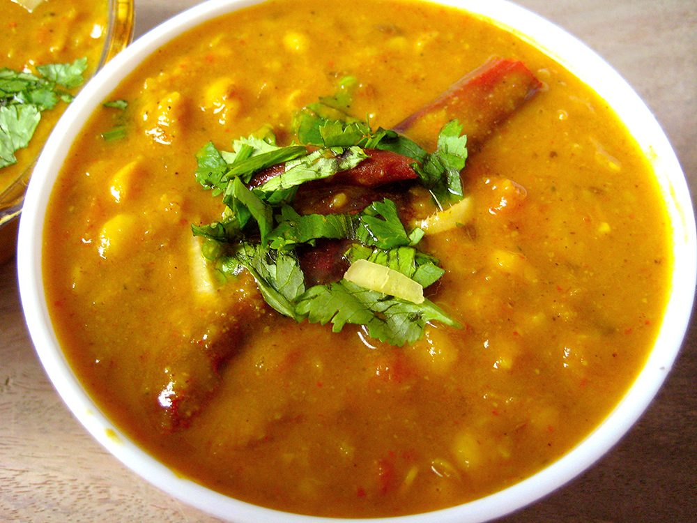
Babru Bhatt Ki Churkani
Bhatt Ki Churkani
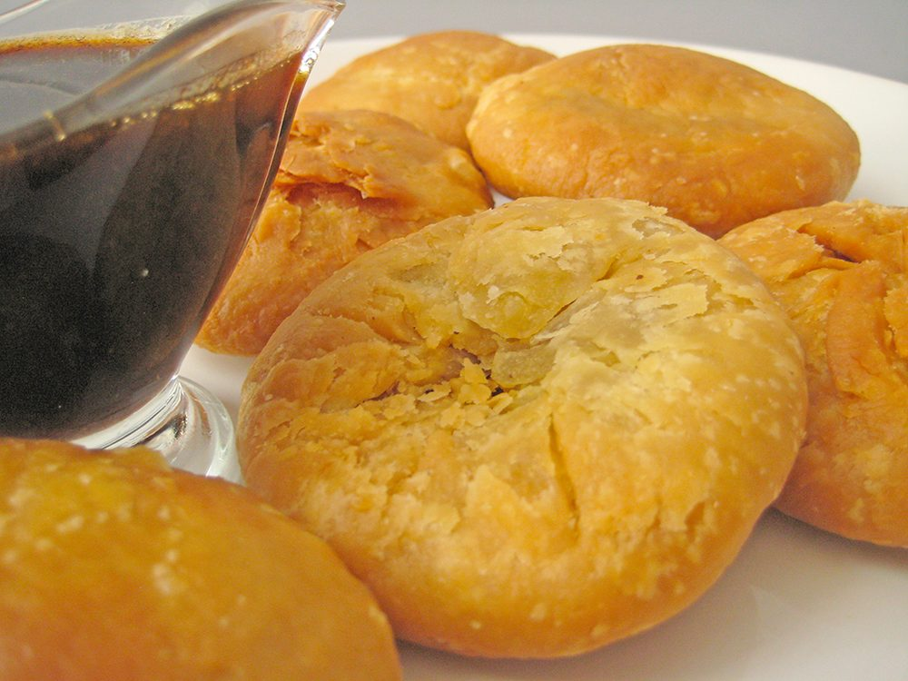
Chainsoo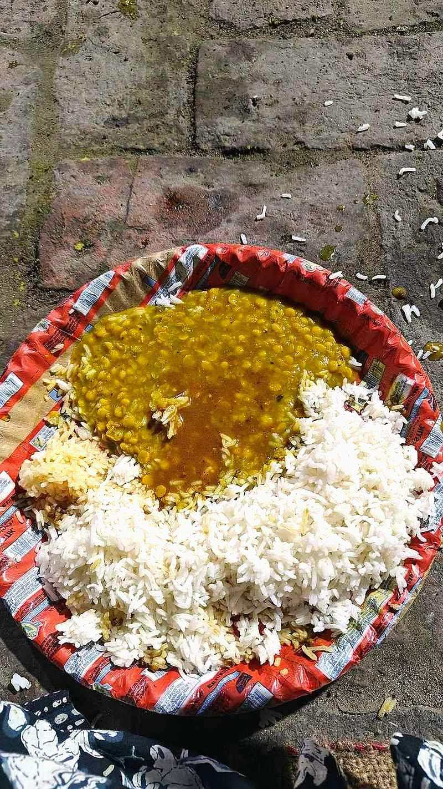
Chana Dal Dham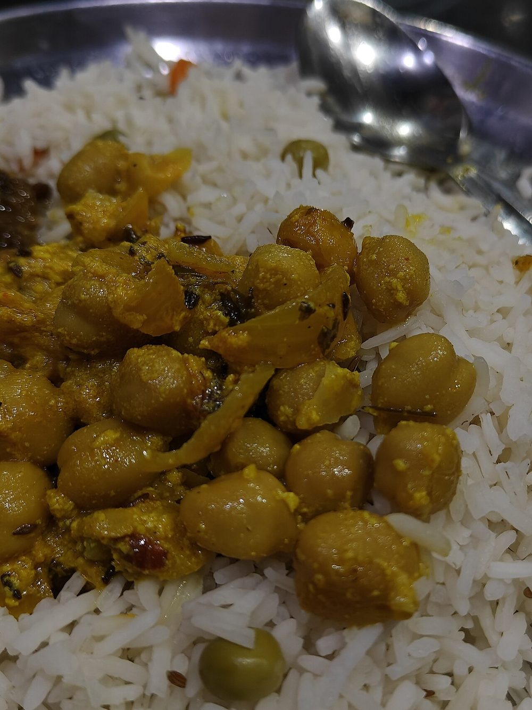
Chana Madra Gahat ki Dal
Gahat ki Dal
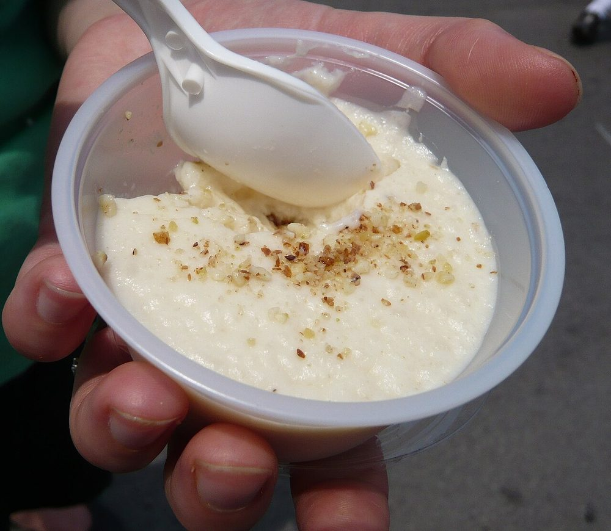
Jhangora ki Kheer Kaapa
Kaapa
 Kaddu Ka Khatta
Kaddu Ka Khatta
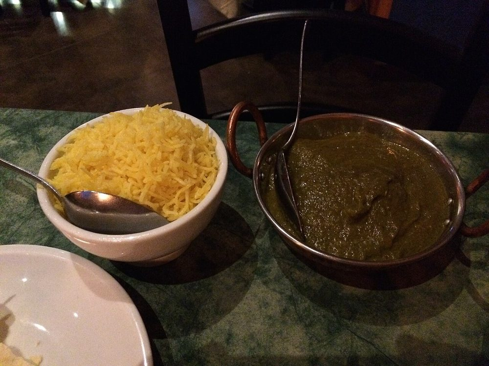
Kafuli Khatta Meat
Khatta Meat
 Kullu Trout
Kullu Trout
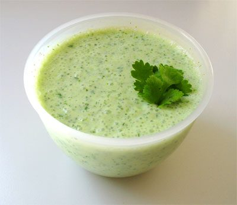
Kumaoni Raita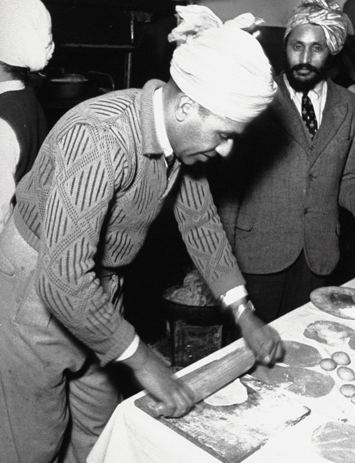
Mandua ki Roti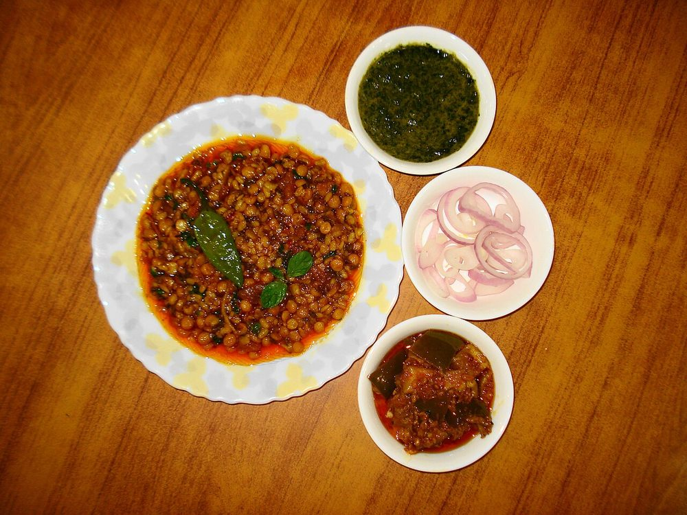
Mash Ki Dal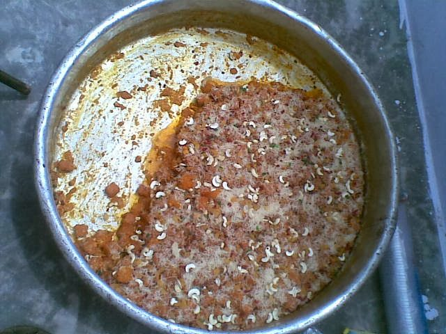
Mittha Patrode
Patrode
 Rajma Madra
Rajma Madra
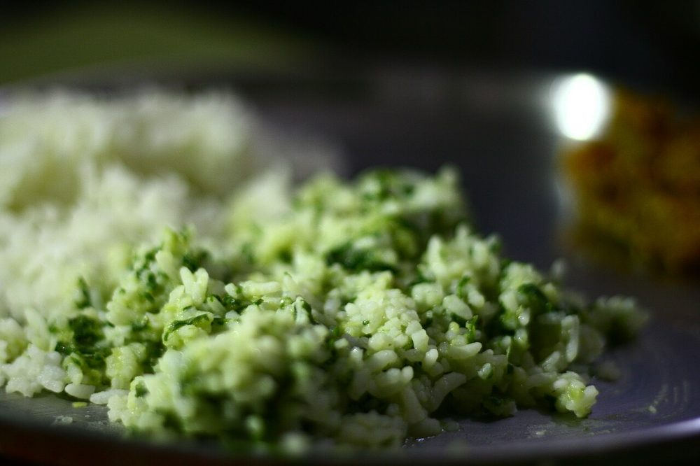
Sepu VadiSiddu
 Thechwani
Thechwani
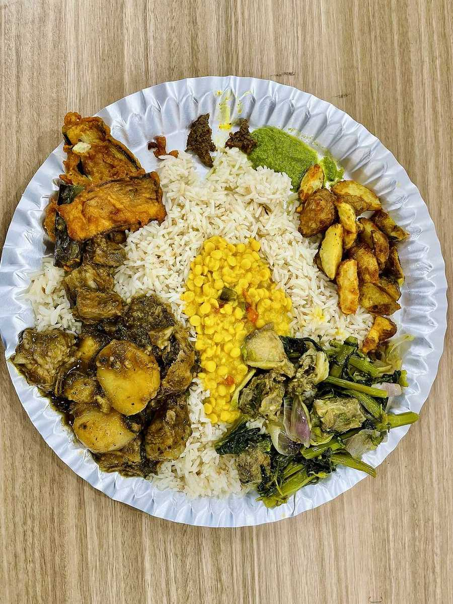
Tudkiya BhathNot cooking tonight?
Leave the box empty and it uses your device location. Nothing is stored here. Prefer Apple Maps?
Tell us what is in your kitchen, and Khaana will help you cook an authentic Indian meal.